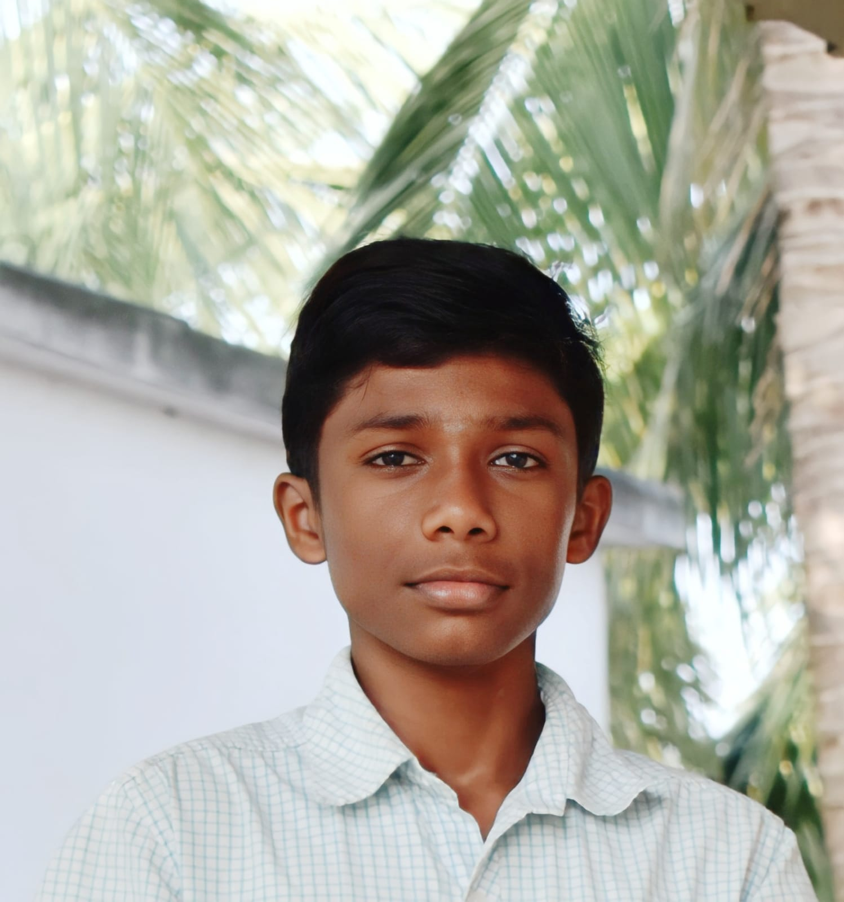

My Journey
A chronological record of engineering projects,
milestones, and breakthroughs.

Where practical work meets engineered solutions.
I work best when I’m building something that has to function in the real world.
That’s usually where real systems exist—somewhere between hardware, software, and environment. I’ve learned to operate across those spaces by focusing on what the system needs rather than how it’s categorized.
I’ve always understood machines through use, not as abstract ideas. For me, they were things that had to work, not just be studied. That perspective shaped how I approach building—by staying close to how a system actually behaves.
That’s also why I chose a Diploma path. I wanted direct exposure to materials, mechanisms, and real systems before moving into deeper theoretical layers.
Now, I work across Electrical, Mechanical, and Software as a single workflow. Not to cover everything, but because real systems don’t separate themselves. The goal is simple: build something that performs reliably when it’s actually used.
Indoctrination
Nikola Tesla pointed out that when education begins to limit imagination, it turns into indoctrination. That idea stayed with me while choosing how I wanted to learn.
I chose a Diploma path because it allowed me to work directly with systems instead of only studying them in abstraction. It gave me a way to understand how things behave in practice, not just in theory.
Over time, I stopped seeing electrical, mechanical, and software as separate tracks. I focus on how they come together in a working system. My only commitment is to the discipline of the craft—building, testing, and improving until it works the way it should.
"The present is theirs; the future, for which I really worked, is mine."